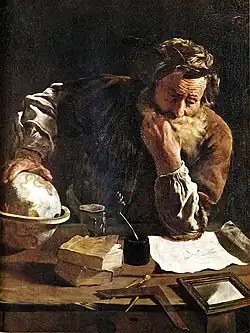
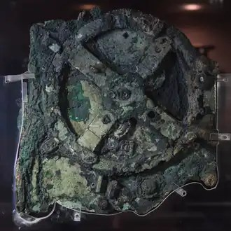
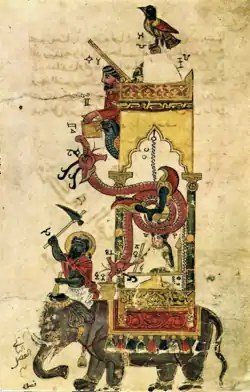
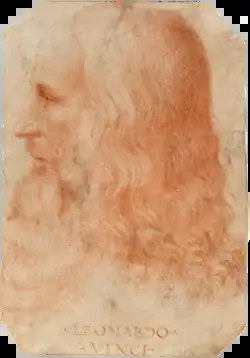
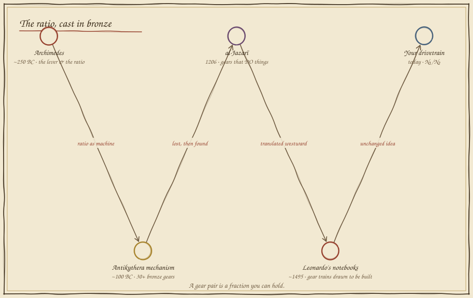
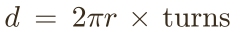
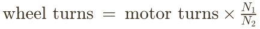
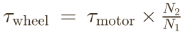
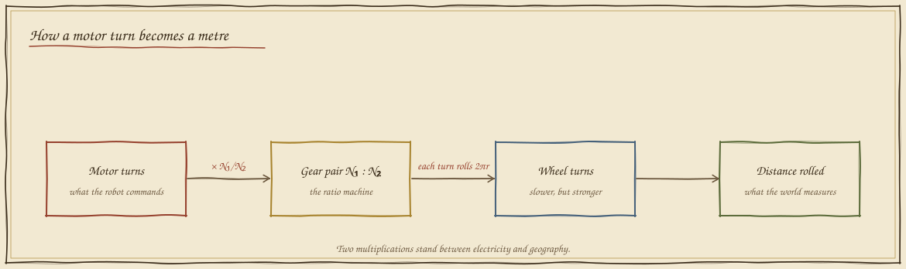

Gears & Ratios
In which two robots receive the same instruction and arrive at different places, and a fraction cast in bronze turns out to run everything with wheels.
One instruction, two truths
Two rovers. Identical motors, identical program: "turn your wheels this many times." The only difference between them is the size of their wheels. Your job is simple: park them both on the chalk line.
It cannot be done. When the small wheel kisses the line, the large one has already rolled past it — every single turn, the large wheel covers more ground. The instruction was never "go this far." It was "turn this much," and the wheel translated it into distance — each wheel in its own dialect. To command distance, you must first know the exchange rate between a turn and the ground. That exchange rate is a ratio, and it is the oldest idea in machine mathematics.
The ratio, cast in bronze
Before anyone wrote gear_ratio = N1/N2, people built the
idea out of wood and bronze — because they needed to lift ships, predict
eclipses, and make an elephant tell the time.





A wheel is a ruler bent into a circle
Roll a wheel one full turn and it lays its own rim down on the road, like unwinding a ribbon. How long is the ribbon? Measure it below — then notice something strange about the number you get.
Change the radius and roll again. The ribbon changes — but ribbon ÷ diameter refuses to move. Every wheel that has ever rolled, on every world, gives the same 3.14159… That stubborn ratio earned its own letter, π, and it turns the wheel into an honest ruler:

But robots rarely bolt the wheel straight to the motor. Between them sits a gear pair — and gears cannot slip. Tooth passes tooth, one for one, like beads on two touching necklaces. If the motor's gear has N₁ teeth and the wheel's gear has N₂, then every motor turn pushes N₁ teeth past the meshing point, and the wheel gear must swallow them in groups of N₂:



Design the drivetrain
Now you have every piece: tooth counts, wheel radius, motor turns. The chalk flag marks the target. Choose your gears, predict your distance with the formula, then press drive — the rover will go exactly where the mathematics says, and nowhere else.
Notice what "correct" means here. Nobody marks your ratio with a red pen — you watch your prediction and the rover's wheels agree, or you watch them disagree and know exactly which number to interrogate. When the flag moves, you don't start over; you re-solve. That is the entire difference between computing an answer and owning a relationship between quantities.
What you can now build
Every bicycle you have ever shifted, every drill that trades scream for strength, every robot gearbox choosing between fast-and-weak and slow-and-mighty — all of it is the one fraction you just designed with. And this folio hides a promise: in Folio 12, the rover will count its own wheel turns to figure out where it is — odometry, the mathematics of dead reckoning — and the exchange rate you learned today becomes a robot's only sense of place.
Field exercise: flip your bicycle over. Count the teeth on the front chainring and the rear sprocket, measure the wheel radius, and predict how far one pedal revolution carries you. Then mark the floor with chalk and pedal exactly once. The floor will grade you — and unlike a worksheet, it is never wrong.
continue to folio 02 — the robot's map return to the codex map